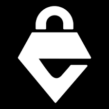
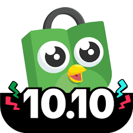

| NO |
Situs |
Deskripsi |
Gambar |
| 1 |
Youtube |
YouTube adalah sebuah situs web berbagi video asal Amerika Serikat yang dibuat oleh tiga mantan karyawan PayPal pada Februari 2005. Situs web ini memungkinkan pengguna mengunggah, menonton, dan berbagi video.[8] Perusahaan ini berkantor pusat di San Bruno, California, dan memakai teknologi Adobe Flash Video dan HTML5 untuk menampilkan berbagai macam konten video buatan pengguna/kreator, termasuk klip film, klip TV, dan video musik. Selain itu, konten amatir seperti blog video, video orisinal pendek, dan video pendidikan juga ada dalam situs ini. |
 |
| 2 |
Reddit |
Reddit adalah sebuah Situs web agregasi berita sosial, pemeringkatan konten, dan diskusi asal Amerika Serikat. Pengguna terdaftar (biasanya disebut sebagai "redditor") mengirimkan konten ke situs tersebut seperti tautan, posting teks, gambar, dan video, yang kemudian di "upvote" atau "downvote" oleh setiap anggota lainnya. Kiriman tersebut kemudian diatur berdasarkan subjek ke dalam sebuah papan grup yang dibuat oleh pengguna yang disebut "communities" (terj. har. 'komunitas') atau "subreddits". Kiriman dengan lebih banyak upvote muncul di bagian atas subreddit mereka dan, jika mereka masih mendapatkan lebih banyak upvote lagi secara signifikan, maka pada akhirnya kiriman tersebut akan muncul di halaman utama depan situs. Administrator Reddit memoderasi subreddits. Moderasi juga dilakukan oleh moderator khusus dari setiap komunitas, dan bukan karyawan Reddit.[5] Situs ini dioperasikan oleh Reddit Inc., yang berbasis di San Francisco.[6] |
 |
| 3 |
Empeshop |
Top-Up Game Favorit Kamu Di Empeshop Agar Main Game Semakin Seru. Pengiriman Cepat Dan Berbagai Methode Pembayaran Yang Lengkap.
|
 |
| 4 |
Tokopedia |
PT Tokopedia merupakan perusahaan teknologi Indonesia dengan misi pemerataan ekonomi secara digital di Indonesia. Visi perusahaan adalah untuk menciptakan ekosistem di mana siapa pun bisa memulai dan menemukan apa pun.[2] Hingga saat ini, Tokopedia termasuk marketplace yang paling banyak dikunjungi oleh masyarakat Indonesia |
 |
| 5 |
Canva |
Canva adalah aplikasi desain grafis yang digunakan untuk membuat grafis media sosial, presentasi, poster, dokumen dan konten visual lainnya. Aplikasi ini juga menyediakan beragam contoh desain untuk digunakan.[5][6][7 |
 |